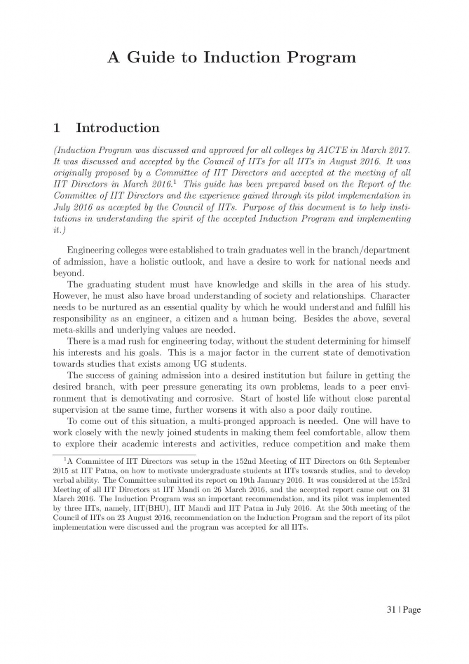
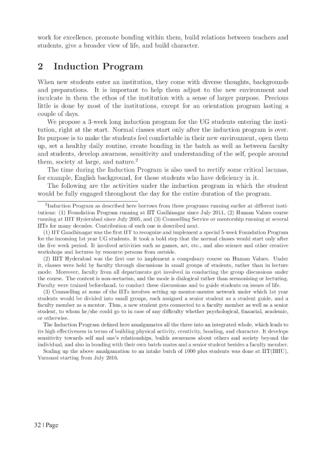
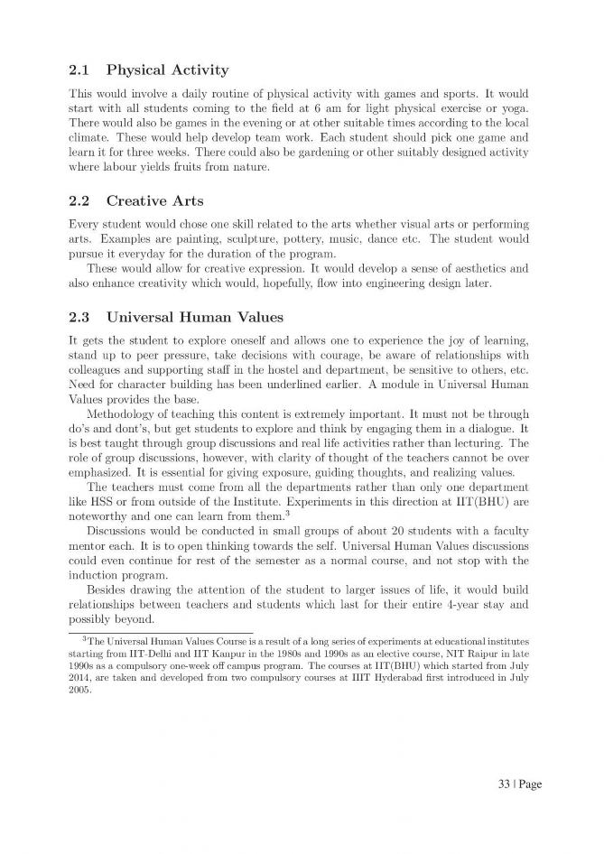
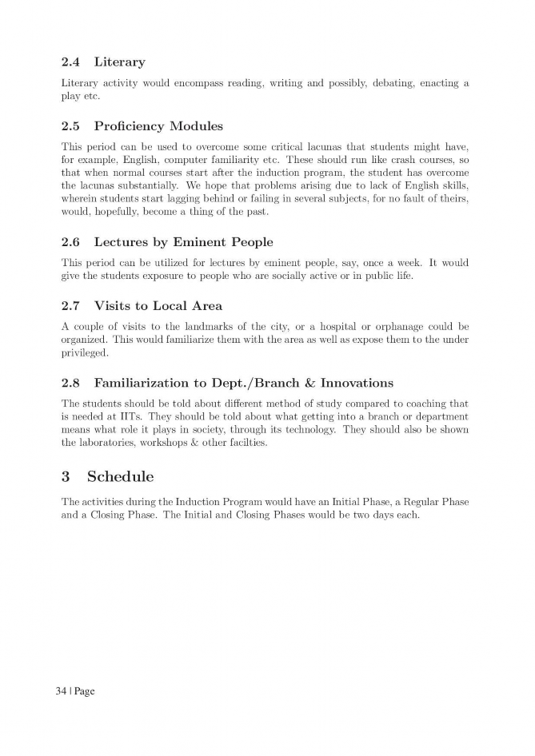
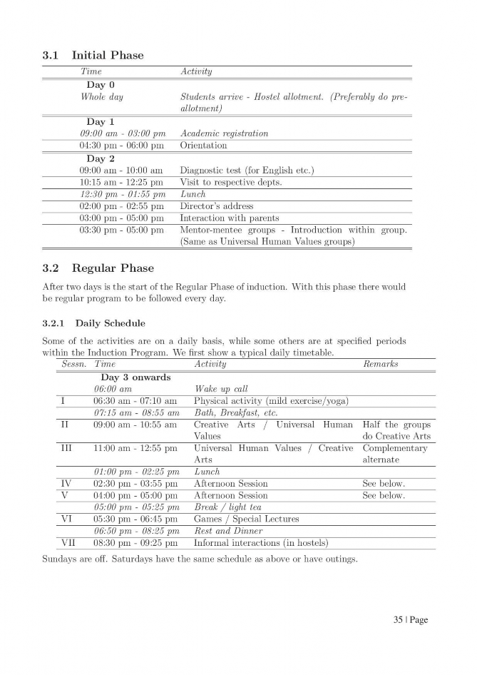
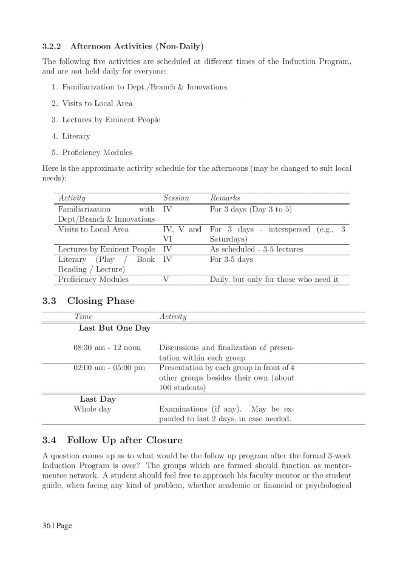
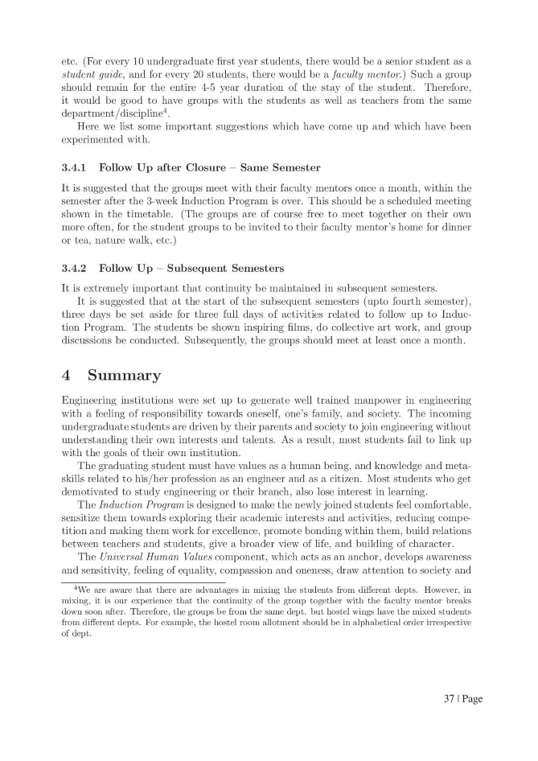
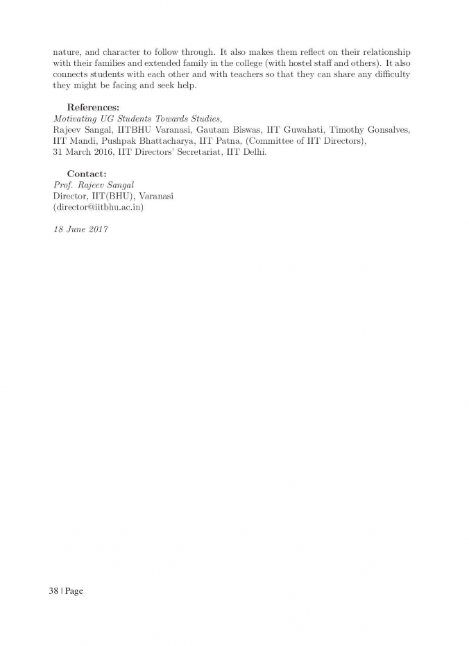

W.E.F. JULY 2018
GROUP A: (CS, IT, EE, EX, EI, FT, AT, MI, BT, & BM)
S. No. | Subject Code | Category | Subject Name | Maximum Marks Allotted | Total Marks | Contact Hours per week | Total Credits | ||||||
Theory | Practical | ||||||||||||
End Sem. | Mid Sem. | Quiz/ Assignme nt | End Sem. | Lab work & Sessional | L | T | P | ||||||
Mandatory Induction Program (First three weeks) | Physical Activity, Creative Arts, Universal Human Values, Literary, Proficiency Modules, Lectures by Eminent People, Visits to local Areas, Familiarization to Dept./Branch & Innovations | ||||||||||||
Fourth week onwards classes will start | |||||||||||||
1. | BT101 | BSC-1 | Engineering Chemistry | 70 | 20 | 10 | 30 | 20 | 150 | 3 | - | 2 | 4 |
2. | BT102 | BSC-2 | Mathematics-I | 70 | 20 | 10 | - | - | 100 | 3 | 1 | - | 4 |
3. | BT103 | HSMC-1 | English for Communication | 70 | 20 | 10 | 30 | 20 | 150 | 3 | - | 2 | 4 |
4. | BT104 | ESC-1 | Basic Electrical & Electronics Engineering | 70 | 20 | 10 | 30 | 20 | 150 | 2 | - | 2 | 3 |
5. | BT105 | ESC-2 | Engineering Graphics | 70 | 20 | 10 | 30 | 20 | 150 | 2 | - | 2 | 3 |
6. | BT106 | ESC-3 | Manufacturing Practices | - | - | - | 15 | 10 | 25 | - | - | 2 | 1 |
7. | BT107 | DLC-1 | Internship-I (60 Hrs Duration) at the Institute level | To be completed during or at the end of the second semester. Its evaluation/credit to be added in third semester. | |||||||||
8. | BT108 | DLC-2 | Swachh Bharat Summer Internship Unnat Bharat Abhiyan (100Hrs)/ Rural Outreach | 15 | 10 | 25 | - | - | 4 | 2 | |||
Total | 350 | 100 | 50 | 150 | 100 | 750 | 13 | 1 | 14 | 21 | |||
W.E.F. JULY 2018
GROUP A: (CS, IT, EE, EX, EI, FT, AT, MI, BT, & BM)
S.No . | Subject Code | Category | Subject Name | Maximum Marks Allotted | Total Marks | Contact Hours per week | Total Credits | ||||||
Theory Slot | Practical Slot | ||||||||||||
End Sem. | Mid Sem Exam. | Quiz/ Assignme nt | End Sem. | Lab work & Sessional | L | T | P | ||||||
1. | BT201 | BSC-3 | Engineering Physics | 70 | 20 | 10 | 30 | 20 | 150 | 2 | 1 | 2 | 4 |
2. | BT202 | BSC-4 | Mathematics-II | 70 | 20 | 10 | - | - | 100 | 3 | 1 | - | 4 |
3. | BT203 | ESC-4 | Basic Mechanical Engineering | 70 | 20 | 10 | 30 | 20 | 150 | 3 | - | 2 | 4 |
4. | BT204 | ESC-5 | Basic Civil Engineering & Mechanics | 70 | 20 | 10 | 30 | 20 | 150 | 3 | - | 2 | 4 |
5. | BT205 | ESC-6 | Basic Computer Engineering | 70 | 20 | 10 | 30 | 20 | 150 | 3 | - | 2 | 4 |
6. | BT206 | HSMC-2 | Language Lab & Seminars | - | - | - | 30 | 20 | 50 | - | - | 2 | 1 |
7. | BT107 | DLC-1 | Internship-I (60 Hrs Duration) at the Institute level | To be completed during first/second semester. Its evaluation/credit to be added in third semester. | |||||||||
Total | 350 | 100 | 50 | 150 | 100 | 750 | 14 | 2 | 10 | 21 | |||
W.E.F. JULY 2018
S.No . | Subject Code | Category | Subject Name | Maximum Marks Allotted | Total Marks | Contact Hours per week | Total Credits | ||||||
Theory Slot | Practical Slot | ||||||||||||
End Sem. | Mid Sem Exam. | Quiz/ Assignme nt | End Sem. | Lab work & Sessional | L | T | P | ||||||
Mandatory Induction Program (First three weeks) | Physical Activity, Creative Arts, Universal Human Values, Literary, Proficiency Modules, Lectures by Eminent People, Visits to local Areas, Familiarization to Dept./Branch & Innovations | ||||||||||||
Fourth week onwards classes will start | |||||||||||||
1. | BT201 | BSC-3 | Engineering Physics | 70 | 20 | 10 | 30 | 20 | 150 | 2 | 1 | 2 | 4 |
2. | BT102 | BSC-2 | Mathematics-I | 70 | 20 | 10 | - | - | 100 | 3 | 1 | - | 4 |
3. | BT203 | ESC-4 | Basic Mechanical Engineering | 70 | 20 | 10 | 30 | 20 | 150 | 3 | - | 2 | 4 |
4. | BT204 | ESC-5 | Basic Civil Engineering & Mechanics | 70 | 20 | 10 | 30 | 20 | 150 | 3 | - | 2 | 4 |
5. | BT205 | ESC-6 | Basic Computer Engineering | 70 | 20 | 10 | 30 | 20 | 150 | 3 | - | 2 | 4 |
6. | BT206 | HSMC-2 | Language Lab & Seminars | - | - | - | 30 | 20 | 50 | - | - | 2 | 1 |
7. | BT107 | DLC-1 | Internship-I (60 Hrs Duration) at the Institute level | To be completed during first/second semester. Its evaluation/credit to be added in third semester. | |||||||||
Total | 350 | 100 | 50 | 150 | 100 | 750 | 14 | 2 | 10 | 21 | |||
W.E.F. JULY 2018
S. No. | Subject Code | Category | Subject Name | Maximum Marks Allotted | Total Marks | Contact Hours per week | Total Credits | ||||||
Theory | Practical | ||||||||||||
End Sem. | Mid Sem. | Quiz/ Assignme nt | End Sem. | Lab work & Sessional | L | T | P | ||||||
1. | BT101 | BSC-1 | Engineering Chemistry | 70 | 20 | 10 | 30 | 20 | 150 | 3 | - | 2 | 4 |
2. | BT202 | BSC-4 | Mathematics-II | 70 | 20 | 10 | - | - | 100 | 3 | 1 | - | 4 |
3. | BT103 | HSMC-1 | English for Communication | 70 | 20 | 10 | 30 | 20 | 150 | 3 | - | 2 | 4 |
4. | BT104 | ESC-1 | Basic Electrical & Electronics Engineering | 70 | 20 | 10 | 30 | 20 | 150 | 2 | - | 2 | 3 |
5. | BT105 | ESC-2 | Engineering Graphics | 70 | 20 | 10 | 30 | 20 | 150 | 2 | - | 2 | 3 |
6. | BT106 | ESC-3 | Manufacturing Practices | - | - | - | 15 | 10 | 25 | - | - | 2 | 1 |
7. | BT107 | DLC-1 | Internship-I (60 Hrs Duration) at the Institute level | To be completed during or at the end of the second semester. Its evaluation/credit to be added in third semester. | |||||||||
8. | BT108 | DLC-2 | Swachh Bharat Summer Internship Unnat Bharat Abhiyan (100Hrs)/ Rural Outreach | 15 | 10 | 25 | - | - | 4 | 2 | |||
Total | 350 | 100 | 50 | 150 | 100 | 750 | 13 | 1 | 14 | 21 | |||
New Scheme Based On AICTE Flexible Curricula
B.Tech. First Year
BT101 | Engineering Chemistry | 3L-0T-2P | 4 Credits |
Water – Analysis, Treatments and Industrial Applications (4 Lectures)
Sources, Impurities, Hardness & its units, Determination of hardness by EDTA method, Alkalinity & It’s determination and related numerical problems.
Boiler problem & softening methods (4 Lectures)
Boiler troubles (Sludge & Scale, Priming & Foaming, Boiler Corrosion, Caustic Embrittlement), Softening methods (Lime-Soda, Zeolite and Ion Exchange Methods) and related numerical problems.
Introduction, Mechanism of lubrication, Classification of lubricants, significance & determination of Viscosity and Viscosity Index, Flash & Fire Points, Cloud & Pour Points, Aniline Point, Acid Number, Saponification Number, Steam Emulsification Number and related numerical problems.
Introduction, types of polymerisation, Classification, mechanism of polymerisation (Free radical & Ionic polymerization). Thermoplastic &Thermosetting polymers Elementary idea of Biodegradable polymers, preparation, properties & uses of the following polymers- PVC, PMMA, Teflon, Nylon 6, Nylon 6:6, Polyester phenol formaldehyde, Urea- Formaldehyde, Buna N, Buna S, Vulcanization of Rubber.
Phase diagram of single component system (Water) Phase diagram of binary Eutectic System ( Cu-Ag.) Corrosion: Types, Mechanisms & prevention.
Principle, Instrumentation & Applications, electronics spectroscopy, Vibrational & Rotational Spectroscopy of diatomic molecules.
Effective Nuclear Charge, Variations: S, P, d & f Orbital energies of atoms in periodic table, Electronics Configuration, atomic & Ionic sizes, electron affinity & electro negativity, Ploarizability & Oxidation States.
Course Outcomes
The concepts developed in this course will aid in quantification of several concepts in chemistry that have been introduced at the 10+2 levels in schools. Technology is being increasingly based on the electronic, atomic and molecular level modifications.
Quantum theory is more than 100 years old and to understand phenomena at nanometer levels, one has to base the description of all chemical processes at molecular levels. The course will enable the student to:
Analyse microscopic chemistry in terms of atomic and molecular orbitals and intermolecular forces.
Rationalise bulk properties and processes using thermodynamic considerations.
Distinguish the ranges of the electromagnetic spectrum used for exciting different molecular
energy levels in various spectroscopic techniques
Rationalise periodic properties such as ionization potential, electronegativity, oxidation states and electronegativity.
List major chemical reactions that are used in the synthesis of molecules.
Practical List
NOTE: At least 8 of the following core experiments must be performed during the session.
Water testing
Determination of Total hardness by Complexometric titration method.
Determination of mixed alkalinity
OH & CO3
CO3 & HCO3
Chloride ion estimation by Argentometric method.
Fuels & Lubricant testing:
Flash & fire points determination by
Pensky Martin Apparatus,
Abel’s Apparatus
Cleveland’s open cup Apparatus
Calorific value by bomb calorimeter.
Viscosity and Viscosity index determination by
Redwood viscometer No.1
Redwood viscometer No.2
Proximate analysis of coal
Moisture content
Ash content
Volatile matter content
Carbon residue
Steam emulsification No & Anline point determination
Cloud and Pour point determination of lubricating oil
Alloy Analysis
Determination of percentage of Fe in an iron alloy by redox titration using N-Phenyl anthranilic acid as internal indicator.
Determination of Cu and or Cr in alloy by Iodometric Titration.
Determination of % purity of Ferrous Ammonium Sulphate & Copper Sulphate.
Reference Books :
Chemistry in Engineering and Technology - Vol.1 &2 Kuriacose and Rajaram , McGraw Hill Education
Fundamental of Molecular Spectroscopy C.N. Banwell , McGraw Hill Education
Engineering Chemistry – B.K. Sharma, Krishna Prakashan Media (P) Ltd., Meerut.
Basics of Engineering Chemistry – S.S. Dara & A.K. Singh, S. Chand &Company Ltd., Delhi.
Applied Chemistry – Theory and Practice, O.P. Viramani, A.K. Narula, New Age International Pvt. Ltd. Publishers, New Delhi.
Elementary Spectroscopy ,Y .R. Sharma , S. Chand Publishing
Polymer Science, Vasant R. Gowariker, N. V. Viswanathan, Jayadev Sreedhar, New Age International Pvt. Ltd
Advanced Inorganic Chemistry, G.R. Chatwal, Goal Publishing house
Engineering Chemistry (NPTEL Web-book ) B.L. Tembe, Kamaluddin and M.S. Krishna
New Scheme Based On AICTE Flexible Curricula
BT102 | MATHEMATICS-I | 3L-1T-0P | 4 Credits |
B. Tech. First Year (I Semester) Branch- Common to All Disciplines
To introduce the idea of applying differential and integral calculus to notions of curvature and to improper integrals. Apart from some applications it gives a basic introduction on Beta and Gamma functions.
To introduce the fallouts of Rolle’s Theorem that is fundamental to application of analysis to Engineering problems.
To develop the tool of power series and Fourier series for learning advanced Engineering Mathematics.
To familiarize the student with functions of several variables that is essential in most branches of engineering.
To develop the essential tool of matrices and linear algebra in a comprehensive manner.
Course Contents:
G.B. Thomas and R.L. Finney, Calculus and Analytic geometry, 9th Edition,Pearson, Reprint, 2002.
Erwin kreyszig, Advanced Engineering Mathematics, 9th Edition, John Wiley & Sons, 2006.
Veerarajan T., Engineering Mathematics for first year, Tata McGraw-Hill, New Delhi, 2008.
Ramana B.V., Higher Engineering Mathematics, Tata McGraw Hill New Delhi, 11thReprint, 2010.
D. Poole, Linear Algebra: A Modern Introduction, 2nd Edition, Brooks/Cole, 2005.
N.P. Bali and Manish Goyal, A text book of Engineering Mathematics, Laxmi Publications, Reprint, 2008.
B.S. Grewal, Higher Engineering Mathematics, Khanna Publishers, 36th Edition, 2010.
New Scheme Based On AICTE Flexible Curricula
B.Tech. First Year
BT103 | English for Communication | 3L-0T-2P | 4 Credits |
Acquaintance with prefixes and suffixes from foreign languages in English to form derivatives, synonyms, antonyms, Reading comprehension.
Introduction, Meaning and Significance, Process of Communication, Oral and Written Communication, 7 c’s of Communication, Barriers to Communication and Ways to overcome them, Importance of Communication for Technical students, nonverbal communication.
Planning, Drafting and Editing, Precise Writing, Précis, Technical definition and Technical description. Report Writing: Features of writing a good Report, Structure of a Formal Report, Report of Trouble, Laboratory Report, Progress Report.
Importance of Business Letters, Parts and Layout; Application, Contents of good Resume, guidelines for writing Resume, Calling/ Sending Quotation, Order, Complaint, E-mail and Tender.
Books Recommended:
‘Technical Communication : Principles and practice’, Meenakshi Raman and Sangeeta Sharma (Oxford)
‘Effective Business Communication’, Krizan and merrier (Cengage learning)
‘Communication Skill, Sanjay Kumar and pushlata, OUP2011
“Practical English Usage Michael Swan OUP, 1995.
“Exercises in spoken English Parts I-III CIEFL, Hyderabad, Oxford University Press
On writing well, William Zinsser, Harper Resource Book 2001.
Remedial English Grammar, F.T. Wood,Macmillan2007.
The student will acquire basic proficiency in English including reading and listening comprehension, writing and speaking skills.
Topics to be covered in the Language laboratory sessions:
Listening Comprehension.
Pronunciation, Intonation, Rhythm
Practising everyday dialogues in English
Interviews.
Formal Presentation
Final Assessment should be based on assignment, assessment, presentation and interview of each candidate.
New Scheme Based On AICTE Flexible Curricula
B.Tech. First Year
BT104 | Basic Electrical & Electronics Engineering | 2L-0T-2P | 3Credits |
The final outcome of the subject will result into an enhancement in understanding the basic concepts of Core Electrical Engineering subjects. The topics covered under this subject will help to enhance the basic understanding of Electrical machines and power systems and basic electronics.
List of experiments/demonstrations:
Basic safety precautions. Introduction and use of measuring instruments – voltmeter, ammeter, multi-meter, oscilloscope. Real-life resistors, capacitors and inductors.
Measuring the steady-state and transient time-response of R-L, R-C, and R-L-C circuits to a step change in voltage (transient may be observed on a storage oscilloscope). Sinusoidal steady state response of R-L, and R-C circuits – impedance calculation and verification. Observation of phase differences between current and voltage. Resonance in R-L-C circuits.
Transformers: Observation of the no-load current waveform on an oscilloscope (non- sinusoidal wave-shape due to B-H curve nonlinearity should be shown along with a discussion about harmonics). Loading of a transformer: measurement of primary and secondary voltages and currents, and power.
Determination of equivalent circuit parameters of a single phase transformer by O.C. and S.C. tests and estimation of voltage regulation and efficiency at various loading conditions and
verification by load test.
Demonstration of cut-out sections of machines: dc machine (commutator-brush arrangement), induction machine (squirrel cage rotor), synchronous machine (field winging - slip ring arrangement) and single-phase induction machine.
Torque Speed Characteristic of separately excited dc motor.
Synchronous speed of two and four-pole, three-phase induction motors. Direction reversal by change of phase-sequence of connections. Torque-Slip Characteristic of an induction motor. Generator operation of an induction machine driven at super- synchronous speed.
Synchronous Machine operating as a generator: stand-alone operation with a load. Control of voltage through field excitation.
Study of V-I Characteristics of Diodes.
Applications of Diodes and their verification.
Transistor applications as amplifier and switch.
Verification of truth table for various gates, Flip-Flops.
Realizations of Various gates, Flip-Flops etc.
Verification of De morgan’s theorems.
D.P. Kothari & I.J. Nagrath, Basic Electrical Engineering, Tata McGraw Hill, latest edition.
S.N. Singh , Basic Electrical Engineering, P.H.I.,2013
Rajendra Prasad, Fundamentals of Electrical Engineering, Prentice Hall,2014
M.S. Sukhija, T. K. Nagsarkar, Basic Electrical and electronics engineering, Oxford University press,2012
C.L. Wadhwa, Basic Electrical Engineering. New Age International.
B.L. Theraja & A.K Theraja Textbook of Electrical Technology - Vol. 1, S. Chand Publication
E. Hughes & I.M. Smith Hughes Electrical Technology Pearson
Vincent Del Toro Electrical Engineering Fundamentals
New Scheme Based On AICTE Flexible Curricula
B.Tech. First Year
BT105 | Engineering Graphics | 2L-0T-2P | 3Credits |
Course Objective:
All phases of manufacturing or construction require the conversion of new ideas and design concepts into the basic line language of graphics. Therefore, there are many areas (civil, mechanical, electrical, architectural and industrial) in which the skills of the CAD technicians play major roles in the design and development of new products or construction. Students prepare for actual work situations through practical training in a new state-of-the-art computer designed CAD laboratory using engineering software. This course is designed to address:
to prepare you to design a system, component, or process to meet desired needs within realistic constraints such as economic, environmental, social, political, ethical, health and safety, manufacturability, and sustainability
to prepare you to communicate effectively
to prepare you to use the techniques, skills, and modern engineering tools necessary for engineering practice
Traditional Engineering Graphics: Principles of Engineering Graphics; Orthographic Projection; Descriptive Geometry; Drawing Principles; Isometric Projection; Surface Development; Perspective; Reading a Drawing; Sectional Views; Dimensioning & Tolerances; True Length, Angle; intersection, Shortest Distance.
Computer Graphics: Engineering Graphics Software; -Spatial Transformations; Orthographic Projections; Model Viewing; Co-ordinate Systems; Multi-view Projection; Exploded Assembly; Model Viewing; Animation; Spatial Manipulation; Surface Modelling; Solid Modelling; Introduction to Building Information Modelling (BIM)
(Except the basic essential concepts, most of the teaching part can happen concurrently in the laboratory)
Module 1: Introduction to Engineering Drawing covering, Principles of Engineering Graphics and their significance, usage of Drawing instruments, lettering, Conic sections including the Rectangular Hyperbola (General method only); Cycloid, Epicycloid, Hypocycloid and Involute; Scales – Plain, Diagonal and Vernier Scales;
Module 2: Orthographic Projections covering, Principles of Orthographic Projections- Conventions - Projections of Points and lines inclined to both planes; Projections of planes inclined Planes - Auxiliary Planes;
Module 3: Projections of Regular Solids covering, those inclined to both the Planes- Auxiliary Views; Draw simple annotation, dimensioning and scale. Floor plans that include: windows, doors, and fixtures such as WC, bath, sink, shower, etc.
Module 4:Sections and Sectional Views of Right Angular Solids covering, Prism, Cylinder, Pyramid, Cone – Auxiliary Views; Development of surfaces of Right Regular Solids - Prism, Pyramid, Cylinder and Cone; Draw the sectional orthographic views of geometrical solids, objects from industry and dwellings (foundation to slab only)
Module 5: Isometric Projections covering, Principles of Isometric projection – Isometric Scale, Isometric Views, Conventions; Isometric Views of lines, Planes, Simple and compound Solids;
Conversion of Isometric Views to Orthographic Views and Vice-versa, Conventions;
Module 6: Overview of Computer Graphics covering, listing the computer technologies that impact on graphical communication, Demonstrating knowledge of the theory of CAD software [such as: The Menu System, Toolbars (Standard, Object Properties, Draw, Modify and Dimension), Drawing Area (Background, Crosshairs, Coordinate System), Dialog boxes and windows, Shortcut menus (Button Bars), The Command Line (where applicable), The Status Bar, Different methods of zoom as used in CAD, Select and erase objects.; Isometric Views of lines, Planes, Simple and compound Solids]
Module 7: Customisation & CAD Drawing consisting of set up of the drawing page and the printer, including scale settings, Setting up of units and drawing limits; ISO and ANSI standards for coordinate dimensioning and tolerancing; Orthographic constraints, Snap to objects manually and automatically; Producing drawings by using various coordinate input entry methods to draw straight lines, Applying various ways of drawing circles;
Module 8: Annotations, layering & other functions covering applying dimensions to objects, applying annotations to drawings; Setting up and use of Layers, layers to create drawings, Create, edit and use customized layers; Changing line lengths through modifying existing lines (extend/lengthen); Printing documents to paper using the print command; orthographic projection techniques; Drawing sectional views of composite right regular geometric solids and project the true shape of the sectioned surface; Drawing annotation, Computer-aided design (CAD) software modeling of parts and assemblies. Parametric and non-parametric solid, surface, and wireframe models. Part editing and two-dimensional documentation of models. Planar projection theory, including sketching of perspective, isometric, multiview, auxiliary, and section views. Spatial visualization exercises. Dimensioning guidelines, tolerancing techniques; dimensioning and scale multi views of dwelling;
Module 9: Demonstration of a simple team design project that illustrates Geometry and topology of engineered components: creation of engineering models and their presentation in standard 2D blueprint form and as 3D wire-frame and shaded solids; meshed topologies for engineering analysis and tool- path generation for component manufacture; geometric dimensioning and tolerancing; Use of solid- modeling software for creating associative models at the component and assembly levels; floor plans that include: windows, doors, and fixtures such as WC, bath, sink, shower, etc. Applying colour coding according to building drawing practice; Drawing sectional elevation showing foundation to ceiling; Introduction to Building Information Modelling (BIM).
Goals & Outcomes:
Introduction to engineering design and its place in society
Exposure to the visual aspects of engineering design
Exposure to engineering graphics standards
Exposure to solid modelling
Exposure to computer-aided geometric design
Exposure to creating working drawings
Exposure to engineering communication
Text/Reference Books:
Bhatt N.D., Panchal V.M. & Ingle P.R., (2014), Engineering Drawing, Charotar Publishing House
Shah, M.B. & Rana B.C. (2008), Engineering Drawing and Computer Graphics, Pearson Education
Agrawal B. & Agrawal C. M. (2012), Engineering Graphics, TMH Publication
Narayana, K.L. & P Kannaiah (2008), Text book on Engineering Drawing, Scitech Publishers
(Corresponding set of) CAD Software Theory and User Manuals
New Scheme Based On AICTE Flexible Curricula
B.Tech. First Year
BT106 | Manufacturing Practices | 0L-0T-2P | 1Credits |
Course Objective:
Manufacturing is fundamental to the development of any engineering product. The course on Engineering Workshop Practice is intended to expose engineering students to different types of manufacturing / fabrication processes, dealing with different materials such as metals, ceramics, plastics, wood, glass etc. While the actual practice of fabrication techniques is given more weightage, some lectures and video clips available on different methods of manufacturing are also included.
Course Contents:
Lectures & videos: (10 hours)
Manufacturing Methods- casting, forming, machining, joining, advanced manufacturing methods (3 lectures)
CNC machining, Additive manufacturing (1 lecture)
Fitting operations & power tools (1 lecture)
Electrical &Electronics (1 lecture)
Carpentry (1 lecture)
Plastic moulding, glass cutting (1 lecture)
Metal casting (1 lecture)
Welding (arc welding & gas welding), brazing (1 lecture)
Course Outcomes:
At the end of this course, students will demonstrate the ability to
Understanding different manufacturing techniques and their relative advantages/ disadvantages with respect to different applications.
Selection of a suitable technique for meeting a specific fabrication need.
Acquire a minimum practical skill with respect to the different manufacturing methods and develop the confidence to design & fabricate small components for their project work and also to participate in various national and international technical competitions.
Introduction to different manufacturing methods in different fields of engineering.
Practical exposure to different fabrication techniques.
Creation of simple components using different materials.
Exposure to some of the advanced and latest manufacturing techniques being employed in the industry.
Workshop Practice:(60 hours)
Machine shop (10 hours)
Fitting shop (8 hours)
Carpentry (6 hours)
Electrical & Electronics(8 hours)
Welding shop ( 8 hours (Arc welding 4 hrs + gas welding 4 hrs)
Casting (8 hours)
Smithy (6 hours)
Plastic moulding & Glass Cutting (6 hours)
Examinations could involve the actual fabrication of simple components, utilizing one or more of the techniques covered above.
Laboratory Outcomes
Upon completion of this laboratory course, students will be able to fabricate components with their own hands.
They will also get practical knowledge of the dimensional accuracies and dimensional tolerances possible with different manufacturing processes.
By assembling different components, they will be able to produce small devices of their interest.
New Scheme Based On AICTE Flexible Curricula
B. Tech. First Year
BT201 | Engineering Physics | 2L-1T-2P | 4 Credits |
Course Contents:
Module 1: Wave nature of particles and the Schrodinger equation (8 lectures)
Introduction to Quantum mechanics, Wave nature of Particles, operators ,Time-dependent and time- independent Schrodinger equation for wavefunction, Application: Particle in a One dimensional Box, Born interpretation, Free-particle wavefunction and wave-packets, vg and vp relation Uncertainty principle.
Module 2: Wave optics (8 lectures)
Huygens’ principle, superposition of waves and interference of light by wave front splitting and amplitude splitting; Young’s double slit experiment, Newton’s rings, Michelson interferometer, Mach- Zehnder interferometer.
Farunhofer diffraction from a single slit and a circular aperture, the Rayleigh criterion for limit of resolution and its application to vision; Diffraction gratings and their resolving power.
Module 3: Introduction to solids (8 lectures)
Free electron theory of metals, Fermi level of Intrinsic and extrinsic, density of states, Bloch’s theorem for particles in a periodic potential, Kronig-Penney model(no derivation) and origin of energy bands. V-I characteristics of PN junction, Zener diode, Solar Cell, Hall Effec .
Module 4: Lasers (8 lectures)
Einstein’s theory of matter radiation interaction and A and B coefficients; amplification of light by population inversion, different types of lasers: gas lasers ( He-Ne, CO2), solid-state lasers(ruby, Neodymium),Properties of laser beams: mono-chromaticity, coherence, directionality and brightness, laser speckles, applications of lasers in science, engineering and medicine. Introduction to Optical fiber, acceptance angle and cone, Numerical aperture, V number, attenuation.
Module 5: Electrostatics in vacuum (8 lectures)
Calculation of electric field and electrostatic potential for a charge distribution; Electric displacement, Basic Introduction to Dielectrics, Gradient, Divergence and curl,Stokes’ theorem, Gauss Theorem, Continuity equation for current densities; Maxwell’s equation in vacuum and non-conducting medium; Poynting vector.
To determine the dispersive power of prism.
To determine the ʎ of sodium light with the help of newton’s Ring.
Resolving Power of Telescope.
YDSE (Young’s double slit Experiment).
To determine the frequency of AC mains supply.
V-I Characteristics of P-N junction diode.
To determine the ʎ of diode loses by single slit diffraction.
To determine the plank’s constant with the help of photocell.
Hall’s effect experiment.
Calibration of ammeter by using reference zener diode.
To study the effect of temperature on reverse saturation current in P-N junction diode and to determine the energy band gap.
To determine the ʎ of sodium by using plane diffraction grating.
To determine the prominent lines of mercury source by plane diffraction grating.
To determine the numerical aperture of an optical fiber.
To determine ʎ of given laser by plane diffraction grating.
Suggested Reference Books
A. Ghatak, Optics.
O. Svelto, Principles of Lasers.
David Griffiths, Introduction to Electrodynamics.
D.J. Griffiths, Quantum Mechanics.
Halliday & Resnick, Physics.
New Scheme Based On AICTE Flexible Curricula
BT202 | MATHEMATICS-II | 3L-1T-0P | 4 Credits |
B. Tech. First Year (II Semester) Branch- Common to All Disciplines
OBJECTIVES: The objective of this course is to familiarize the prospective engineers with techniques in Ordinary and partial differential equations, complex variables and vector calculus. It aims to equip the students to deal with advanced level of mathematics and applications that would be essential for their disciplines. More precisely, the objectives are:
To
introduce effective mathematical tools for the solutions of ordinary and partial differential equations that model physical processes.
To
introduce the tools of differentiation and integration of functions of complex variable that are used in various techniques dealing engineering problems.
To
acquaint the student with mathematical tools available in vector calculus needed various field of science and engineering.
Course Contents:
G.B. Thomas and R.L. Finney, Calculus and Analytic geometry, 9th Edition, Pearson, Reprint, 2002.
Erwin kreyszig, Advanced Engineering Mathematics, 9th Edition, John Wiley & Sons, 2006.
W. E. Boyce and R. C. DiPrima, Elementary Differential Equations and Boundary Value Problems, 9th Edn., Wiley India, 2009.
S. L. Ross, Differential Equations, 3rd Ed., Wiley India, 1984.
E. A. Coddington, An Introduction to Ordinary Differential Equations, Prentice Hall India, 1995.
E. L. Ince, Ordinary Differential Equations, Dover Publications, 1958.
J. W. Brown and R. V. Churchill, Complex Variables and Applications, 7th Ed., McGraw Hill, 2004.
N.P. Bali and Manish Goyal, A text book of Engineering Mathematics, Laxmi Publications, Reprint, 2008.
B.S. Grewal, Higher Engineering Mathematics, Khanna Publishers, 36th Edition, 2010.
New Scheme Based On AICTE Flexible Curricula
B. Tech. First Year
BT203 | Basic Mechanical Engineering | 3L-0T-2P | 4 Credits |
,Hooks law and modulus of elasticity, Hardness and Impact testing of materials, BHN etc.
Working principle of steam Engine, Carnot, Otto, Diesel and Dual cycles P-V & T-S diagrams and its efficiency, working of Two stroke & Four stroke Petrol & Diesel engines. Working principle of compressor.
Kothandaraman & Rudramoorthy, Fluid Mechanics & Machinery, New Age .
Nakra & Chaudhary , Instrumentation and Measurements, TMH.
Nag P.K, Engineering Thermodynamics , TMH .
Ganesan , Internal Combustion Engines, TMH .
Agrawal C M, Basic Mechanical Engineering ,Wiley Publication.
Achuthan M , , Engineering Thermodynamics ,PHI.
Theory related Eight to Ten experiments including core experiments as follows:
Study of Universal Testing machines.
Linear and Angular measurement using, Micrometer, Slip Gauges, Dial Gauge and Sine-bar.
Study of Lathe Machine.
Study of Drilling Machines.
Verification of Bernoulli’s Theorem.
Study of various types of Boilers.
Study of different IC Engines.
Study of different types of Boilers Mountings and accessories.
New Scheme Based On AICTE Flexible Curricula
B. Tech. First Year
BT204 | Basic Civil Engineering & Mechanics | 3L-0T-2P | 4 Credits |
Stones, bricks, cement, lime, timber-types, properties, test & uses, laboratory tests concrete and mortar Materials: Workability, Strength properties of Concrete, Nominal proportion of Concrete preparation of concrete, compaction, curing.
Elements of Building Construction, Foundations conventional spread footings, RCC footings, brick masonry walls, plastering and pointing, floors, roofs, Doors, windows, lintels, staircases – types and their suitability
Introduction to surveying Instruments – levels, thedolites, plane tables and related devices. Electronic surveying instruments etc. Measurement of distances – conventional and EDM methods, measurement of directions by different methods, measurement of elevations by different methods. Reciprocal leveling.
Mapping details and contouring, Profile Cross sectioning and measurement of areas, volumes, application of measurements in quantity computations, Survey stations, Introduction of remote sensing and its applications.
Engineering Mechanics
Forces and Equilibrium: Graphical and Analytical Treatment of Concurrent and non- concurrent Co- planner forces, free Diagram, Force Diagram and Bow’s notations, Application of Equilibrium Concepts: Analysis of plane Trusses: Method of joints, Method of Sections. Frictional force in equilibrium problems
Centre of Gravity and moment of Inertia: Centroid and Centre of Gravity, Moment Inertia of Area and Mass, Radius of Gyration, Introduction to product of Inertia and Principle Axes.
Support Reactions, Shear force and bending moment Diagram for Cantilever & simply supported beam with concentrated, distributed load and Couple.
S. Ramamrutam & R.Narayanan; Basic Civil Engineering, Dhanpat Rai Pub.
Prasad I.B., Applied Mechanics, Khanna Publication.
Punmia, B.C., Surveying, Standard book depot.
Shesha Prakash and Mogaveer; Elements of Civil Engg & Engg. Mechanics; PHI
S.P,Timoshenko, Mechanics of stricture, East West press Pvt.Ltd.
Surveying by Duggal – Tata McGraw Hill New Delhi.
Building Construction by S.C. Rangwala- Charotar publications House, Anand.
Building Construction by Grucharan Singh- Standard Book House, New Delhi
Global Positioning System Principles and application- Gopi, TMH
R.C. Hibbler – Engineering Mechanics: Statics & Dynamics.
A. Boresi & Schmidt- Engineering Mechines- statics dynamics, Thomson’ Books
R.K. Rajput, Engineering Mechanics S.Chand & Co.
Students are expected to perform minimum ten experiments from the list suggested below by preferably selecting experiments from each unit of syllabus.
To perform traverse surveying with prismatic compass, check for local attraction and determine corrected bearings and to balance the traverse by Bowditch’s rule.
To perform leveling exercise by height of instrument of Rise and fall method.
To measure horizontal and vertical angles in the field by using Theodolite.
To determine (a) normal consistency (b) Initial and Final Setting time of a cement Sample.
To determine the workability of fresh concrete of given proportions by slump test or compaction factor test.
To determine the Compressive Strength of brick.
To determine particle size distribution and fineness modulus of course and fine Aggregate.
To verify the law of Triangle of forces and Lami’s theorem.
To verify the law of parallelogram of forces.
To verify law of polygon of forces
To find the support reactions of a given truss and verify analytically.
To determine support reaction and shear force at a given section of a simply Supported beam and verify in analytically using parallel beam apparatus.
To determine the moment of inertia of fly wheel by falling weight method.
To verify bending moment at a given section of a simply supported beam.
New Scheme Based On AICTE Flexible Curricula
B. Tech. First Year
BT205 | Basic Computer Engineering | 3L-0T-2P | 4 Credits |
Introduction to Algorithms, Complexities and Flowchart, Introduction to Programming, Categories of Programming Languages, Program Design, Programming Paradigms, Characteristics or Concepts of OOP, Procedure Oriented Programming VS object oriented Programming. Introduction to C++: Character Set, Tokens, Precedence and Associativity, Program Structure, Data Types, Variables, Operators, Expressions, Statements and control structures, I/O operations, Array, Functions,
Object & Classes, Scope Resolution Operator, Constructors & Destructors, Friend Functions, Inheritance, Polymorphism, Overloading Functions & Operators, Types of Inheritance, Virtual functions. Introduction to Data Structures.
Study and practice of Internal & External DOS commands.
Study and practice of Basic linux Commands – ls, cp, mv, rm, chmod, kill, ps etc.
Study and Practice of MS windows – Folder related operations, My-Computer, window explorer, Control Panel,
Creation and editing of Text files using MS- word.
Creation and operating of spreadsheet using MS-Excel.
Creation and editing power-point slides using MS- power point
Creation and manipulation of database table using SQL in MS-Access. 08.WAP to illustrate Arithmetic expressions
09. WAP to illustrate Arrays.
WAP to illustrate functions.
WAP to illustrate constructor & Destructor
WAP to illustrate Object and classes.
WAP to illustrate Operator overloading
WAP to illustrate Function overloading
WAP to illustrate Derived classes & Inheritance
WAP to insert and delete and element from the Stack
WAP to insert and delete and element from the Queue
WAP to insert and delete and element from the Linked List
Fundamentals of Computers : E Balagurusamy, TMH
Basic Computer Engineering: Silakari and Shukla, Wiley India
Fundamentals of Computers : V Rajaraman, PHI
Information Technology Principles and Application: Ajoy Kumar Ray & Tinku Acharya PHI.
Introduction of Computers : Peter Norton, TMH
Object Oriented Programming with C++ :E.Balagurusamy, TMH
Object Oriented Programming in C++: Rajesh K.Shukla, Wiley India
Concepts in Computing: Kenneth Hoganson, Jones & Bartlett.
Operating Systems – Silberschatz and Galvin - Wiley India
Computer Networks:Andrew Tananbaum, PHI
Data Base Management Systems, Korth, TMH
Cloud Computing, Kumar, Wiley India
New Scheme Based On AICTE Flexible Curricula
B. Tech. First Year
BT206 | Language Lab and Seminars | 0L-0T-2P | 1 Credits |
Topics to be covered in the Language laboratory sessions:
Introducing oneself, family, social roles.
Public Speaking and oral skills with emphasis on conversational practice, extempore speech, JAM(Just a minute sessions), describing objects and situations, giving directions, debate, telephonic etiquette.
Reading Comprehension: Intensive reading skills, rapid reading, and reading aloud (Reading material to be selected by the teacher).
To write a book review. Standard text must be selected by the teacher.
Role plays: preparation and delivery topic to be selected by teacher/faculty.







